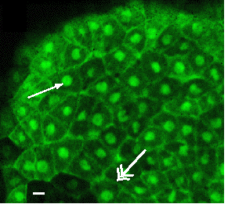
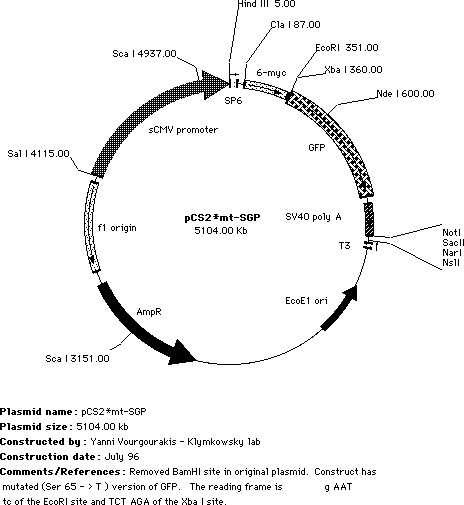
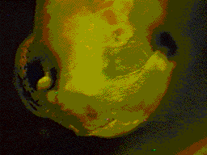
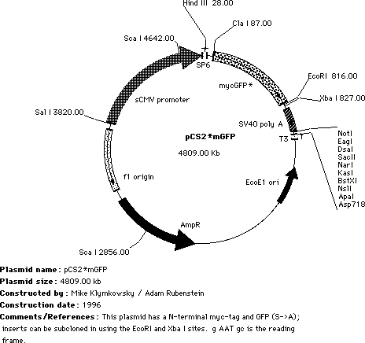
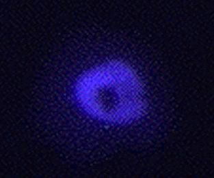

Green
plasmids |
Plakoglobin-GFP*
in living Xenopus |
|
 |
| |
| We started with the pCS2-mt plasmid developed by Turner, Rupp & Weintraub. This is the ClaI to XbaI region of the pCS2mt plasmid, the ClaI, XbaI and EcoRI sites together with the We subcloned the GFP coding region into the pCSmt plasmid to generate pCS2mt-GFP, this leaves both EcoR1 and XbaI sites We then mutated the GFP moeity to increase its efficiency, as described by Heim & Tsien (1996. Current Biology 6:178-182). In pCS2mt-GFP, the S »T and S » A mutant forms of GFP has been inserted such that the myc tags and the GFP are in-frame. |
| Both Ser65 |
Notes on subcloning: Starting with the pCS2mt-GFP plasmid, you can delete the N-terminal my tags by subcloning into the Cla I site. (ATGCAT). This site is up stream of the start codon for the myc tags, so you need to be sure to include the start codon for your inserted sequence. You can start right after the ClaI site. |
| Alternatively, you can keep the 6 myc tagges at the N-terminus of your coding region, and subclone your sequence between the myc tags and the GFP using EcoRI and Xba I sites. This produces an N-terminally myc-tagged, C-terminally GFP-tagged chimeric polypeptide. The EcoRI site's AAT defines the reading frame for the insert. We are not always sure which version of pCS2mt-GFP* we are sending (i.e. with or without the BamHI site), so please check if you care! We also have (somewhere) a version of this plasmid in which the myc-tags have been removed; this is when we are co-injecting RNAs encoding a myc-tagged polypeptide. |
 |
| Transplant of neural crest from GFP RNA injected embryo into a uninjected embryo. | The pCS2 plasmid can be used to synthesize RNA via its SP6 promoter, or directly drive expression in eukarotic cells via the CMV promoter. When pCS2-GREEN plasmid DNA is injected directly into the nuclei of cultured Xenopus A6 or rat kanagaroo PtK1 cells, green fluorescence can be easily visualized within 1 to 2 hours (using standard fluorescein optics). RNA encoding GFP can be seen in Xenopus embryos for many days and appears to be non-toxic. We have made a number of different versions of the pCS2 plasmid, and we are willing to supply them to you if you are interested -- just contact us. |
| |
| To place a single myc-GFP tag at the N-terminus of your polypeptide, we use pCS2mycGFP. In these plasmids, subcloning into the EcoR/Xba I sites leads to the expression of a chimeric polypeptide with an N-terminal, single myc-GFP tag. |
|  |
The ~28kDa GFP moiety can influence the behavior of the chimeric polypeptide, so it is probably a smart move to make both N- and C- GFP tagged forms of your polypeptide of interest. We send out the pCS2mycGFP* plasmid containing the XTCF3 or Slug sequence for reasons to complex to discuss here! Remove the insert with a EcoRI / Xba I digest. |
| |
|
We purchased the pQBI50 plasmid from Quantum BioTechnologies Inc and then used PCR to move the BFP moeity into pCS2 to create pCS2mt-BFP. However, the blue fluorescence is not very strong, we do not send it out. There is probably a better version available now, and we would not want to disappoint anyone! blue plakoglobin
in the nucleus of Xenopus A6 cells |
 |
| When using a blue plasmid we recommend the protocol of Rizzuto et al (1996. Curr. Biol. 6:183-188); add 10µM Troxol (a soluble vitamin E analog --from a 10mM stock in DMSO) to the culture media to minimize bleaching. |
| |
|
Addition
hints: Take care, looking at GFP too long leads to increased red autofluorescence, which can cause experimental confusion. After 24 hours, the GFPs can easily been seen using a 2.5X lens! (probably expression is a little too robust). |
| |
previous
3 August 2002 - revised 16 July 2019 |